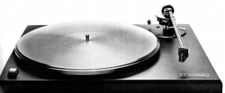
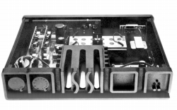
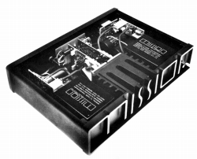
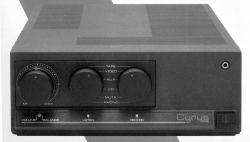
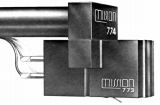
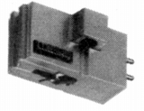
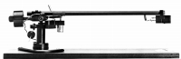

MISSION（ミッション）
1977年設立のイギリスのオーディオ・メーカー。当初はスピーカーからスタートし、1980年代に入り、アンプやアナログプレイヤーなども手がけるようになった。初期の製品は「700」番代の型番を持つ。日本では1982年よりヒビノ電気音響�鰍ﾉより紹介された。当サイトで扱うアナログ関連製品もこの「700」番代の製品である。
  
（左から アナログプレイヤー 775 プリアンプ 776 パワーアンプ 777）

（その後、代理店はテクニカに移り、「サイラス」などのプリメインアンプが輸入された）
�T.カートリッジ
最初に登場したのが比較的高出力タイプのMC型の773HCで、ついで低出力タイプの廉価版ブラック仕上げの773LCと高級タイプ金メッキ仕上げの773SMが追加された。

(773HC)
(773SM)
�U.アーム
単品発売されたので、汎用性はあるのだろうが、デザイン的には同社カートリッジ専用のイメージがあるし、オーバーハングの調整が不可能の為使えるカートリッジは限られるであろう。
